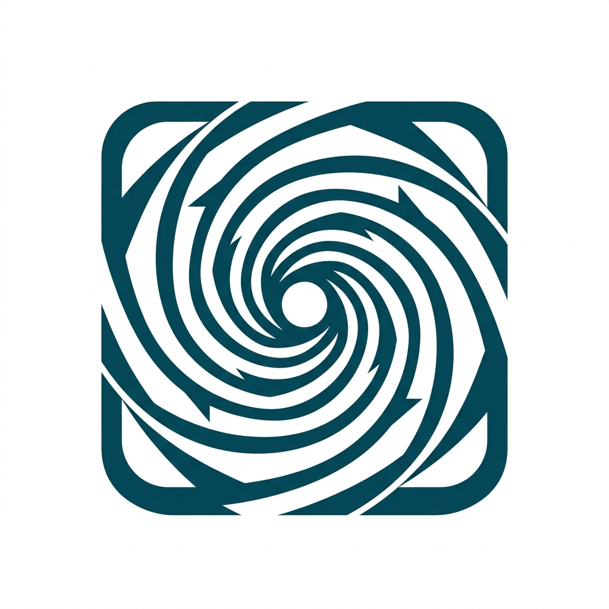

OpenAI開発

Codex向いている仕事 コードベース理解、実装、修正、テスト、レビュー。
- AGENTS.md
- Skills / Plugins
- MCP / local・cloud
最初の一歩: 小さな不具合の調査からテストまで任せる。
研修用サンプル

Five agents, one starting point
開発とナレッジワークの5製品を、用途と主な機能から読み比べる研修用サンプルです。
5製品を比べるHow to start
1つ選ぶ → 小さく任せる → 結果を人が確認する
Choose by work
5件表示

Codex向いている仕事 コードベース理解、実装、修正、テスト、レビュー。
最初の一歩: 小さな不具合の調査からテストまで任せる。
向いている仕事 複数ファイルの開発、Git操作、反復作業の自動化。
最初の一歩: 未テスト機能へテストを追加して直す。
向いている仕事 調査、資料作成、表計算、ファイル整理、定期レポート。
最初の一歩: 複数資料からレビュー可能な文書を作る。
向いている仕事 要件、設計、タスクを明確にする仕様駆動開発。
最初の一歩: 新機能をrequirements、design、tasksへ分ける。
向いている仕事 計画、実装、ブラウザ検証をArtifactで確認するWeb開発。
最初の一歩: 1ページサイトを作り、2画面幅で確認する。
Compare two
製品カードから2つまで選べます。
Shared and product-specific
2026年8月9日時点の公式情報を研修向けに要約しています。機能や提供面は変更される可能性があります。選択内容は送信・保存されません。